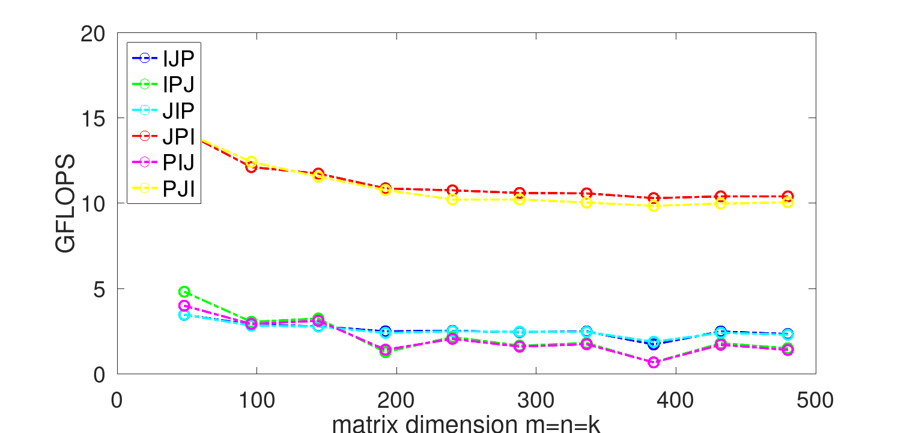

This Live Script helps you visualize the performance of the very simple implementation of matrix-matrix multiplication in Gemm_IJP.c, Gemm_IPJ.c, Gemm_JIP.c, Gemm_JPI.c, Gemm_PIJ.c, and Gemm_PJI.c,
To gather the performance data, in the command (terminal) window change the directory to Assignments/Week1/C/. After implementing the various versions, execute
make IJP (actually, you probably did this one already)
make IPJ
make JIP
make JPI
make PIJ
make PJI
or, if you have implemented them all, you can execute
make All_Orderings
These compile and execute a driver routine (the source of which is in driver.c) that collects accuracy and performance data for the various implementations.
When completed, various data is in output file 'output_XYZ.m' (for XYZ $$ \in $$ {IJP,IPJ,JIP,JPI,PIJ,PJI}) in the same directory where you found this Live Script (LAFF-On-HPC/Assignments/Week1/C/data/). This Live Script then creates graphs from that timing data for the orderings that are selected in the Live Script by placing a 1 in the if statement right before the appropriate section of the Live Script, and for the JIP ordering (the section for which is not enclosed by a conditional statement). Plot_All_Orderings.mlx as downloaded already has a 1 in the if statement right before the PIJ ordering. Go ahead and click on "Run All". It executes all the code in the rest of this file which, as distributed, creates a graph showing the performance of the IJP and PIJ orderings. Matlab may warn you that it cannot reach some of the code in the Live Script. This is because the sections with some of the orderings is preceded by a condition (0), that always evaluates to false. Change the zeros to ones in the if statements before the orderings for which you created data and re-run the Live Script to see a graph showing the performance of those orderings. You will want to look at the graphs this creates.
plot_colors = [ 0 0 0; 0 0 1; 0 1 0; 0 1 1; 1 0 0; 1 0 1; 1 1 0; 1 1 1]; % Create figure figure1 = figure('Name','GFLOPS'); % Create axes, labels, legends. In future routines for plotting performance, % the next few lines will be hidden in the script. axes2 = axes('Parent',figure1); hold(axes2,'on'); ylabel( 'GFLOPS', 'FontName', 'Helvetica Neue' ); xlabel( 'matrix dimension m=n=k', 'FontName', 'Helvetica Neue' ); box(axes2,'on'); set( axes2, 'FontName', 'Helvetica Neue', 'FontSize', 18); % Plot time data for IJP output_IJP % load data for IJP ordering assert( max(abs(data(:,6))) < 1.0e-10, ... 'Hmmm, better check if there is an accuracy problem'); plot( data(:,1), data(:,5), 'DisplayName', 'IJP', 'MarkerSize', 8, 'LineWidth', 2, ... 'Marker', 'o', 'LineStyle', '-.', 'Color', plot_colors( 2,: ) ); % Plot time data for IPJ (to plot change "0" to "1") if ( 1 ) output_IPJ assert( max(abs(data(:,6))) < 1.0e-10, ... 'Hmmm, better check if there is an accuracy problem'); plot( data(:,1), data(:,5), 'DisplayName', 'IPJ', 'MarkerSize', 8, 'LineWidth', 2, ... 'Marker', 'o', 'LineStyle', '-.', 'Color', plot_colors( 3,: ) ); end % Plot time data for JIP (to plot change "0" to "1") if ( 1 ) output_JIP assert( max(abs(data(:,6))) < 1.0e-10, ... 'Hmmm, better check if there is an accuracy problem'); plot( data(:,1), data(:,5), 'DisplayName', 'JIP', 'MarkerSize', 8, 'LineWidth', 2, ... 'Marker', 'o', 'LineStyle', '-.', 'Color', plot_colors( 4,: ) ); end % Plot time data for JPI (to plot change "0" to "1") if ( 1 ) output_JPI assert( max(abs(data(:,6))) < 1.0e-10, ... 'Hmmm, better check if there is an accuracy problem'); plot( data(:,1), data(:,5), 'DisplayName', 'JPI', 'MarkerSize', 8, 'LineWidth', 2, ... 'Marker', 'o', 'LineStyle', '-.', 'Color', plot_colors( 5,: ) ); end % Plot time data for PIJ (to plot change "0" to "1") if ( 1 ) output_PIJ assert( max(abs(data(:,6))) < 1.0e-10, ... 'Hmmm, better check if there is an accuracy problem'); plot( data(:,1), data(:,5), 'DisplayName', 'PIJ', 'MarkerSize', 8, 'LineWidth', 2, ... 'Marker', 'o', 'LineStyle', '-.', 'Color', plot_colors( 6,: ) ); end % Plot time data for PJI (to plot change "0" to "1") if ( 1 ) output_PJI assert( max(abs(data(:,6))) < 1.0e-10, ... 'Hmmm, better check if there is an accuracy problem'); plot( data(:,1), data(:,5), 'DisplayName', 'PJI', 'MarkerSize', 8, 'LineWidth', 2, ... 'Marker', 'o', 'LineStyle', '-.', 'Color', plot_colors( 7,: ) ); end % Adjust the x-axis and y-axis range to start at 0 v = axis; % extract the current ranges axis( [ 0 v(2) 0 v(4) ] ) % start the x axis and y axis at zero legend2 = legend( axes2, 'show' ); set( legend2, 'Location', 'northwest', 'FontSize', 18) ; % Uncomment if you want to create a pdf for the graph % print( 'Plot_All_Orderings.png', '-dpng' );